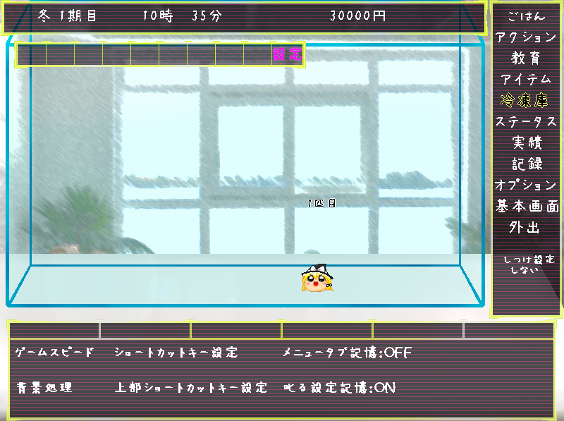

|  | ◆オプション◆ ゲームのオプション設定です。 ゲームスピード……ゲーム内の時間経過の速さを調整できます。ゲーム内の１分が経過するのに現実時間だと はやい……１秒 ふつう……６秒 おそい……６０秒（リアルタイム） となります。 背景処理……背景処理を一部カットして動作を軽量化します。（Win7以降のスペックのPCの場合ほぼ効果が無いかもしれません） ショートカットキー設定……ショートカットキーの設定 を行います 上部ショートカットキー設定……上部ショートカットキーの設定 を行います 叱る設定記憶……アクションを選択しなおした場合、「しつけ設定」の叱るのON、OFFを引き継ぐかを設定します。 メニュータブ記憶……右メニューを切り替えた際に、直前の下メニュータブの選択を記憶するかを設定します。 |